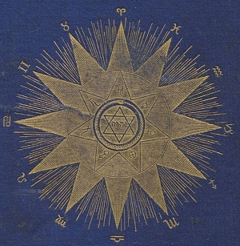

Sacred Texts Star Lore
Buy this Book at Amazon.com
|  | Solar Biologyby Hiram E. Butler[1887] |
The next time someone asks you "what's your sign" as an icebreaker, remember Mr. Hiram E. Butler. Hiram Butler put forward a radically simplified version of astrology during the 19th century. Up until then, astrologers had laboriously plotted out the configuration of the planets, including exact angles between planets, houses (which are specific to a geographic location and time), ascending nodes, descending nodes, rising signs, and so on. And this is still what a professional astrologer will base his or her advice on. Whether or not you believe, one has to admit that this not the easiest method of divination ever invented. One can't just learn this on a whim.
However, the vernacular astrology, with everyone divided into twelve pigeonholes based on their natal sun sign, can be traced back to Mr. Butler, and particularly this book, Solar Biology. Butler actually divided everyone into 144 pigeonholes, based on their natal sun and moon signs. The planets are also used, but only the sign they occupy is important; the angles between them are ignored. This makes it easy to create a horoscope, as the time and place of birth are no longer required. The tricky computation of the rising signs and houses is skipped. You just look up the positions in any ephemeris, then read the matching page in this book. The result is a system so simple, practically anyone can do it.
Although not well known today, Butler is the missing link in the chain from Ptolemy's Tetrabiblos to the astrology column in the back of your daily paper.
Production Notes: This text uses Unicode to present astrological symbols, so your browser has to be Unicode compliant. The original book used was bound with an ephemeris for 1820 to 1900 which was impossible to OCR, and is omitted from this text. You can use the Planetary Positions page at this site to obtain the same information for an arbitrary date.--J.B. Hare, March 5, 2008.